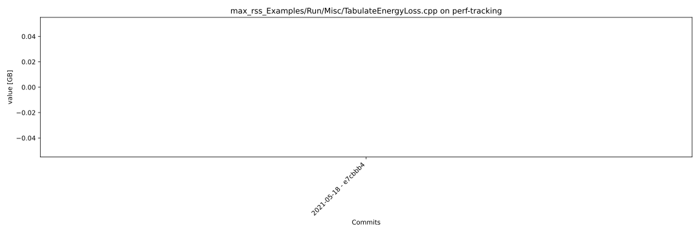
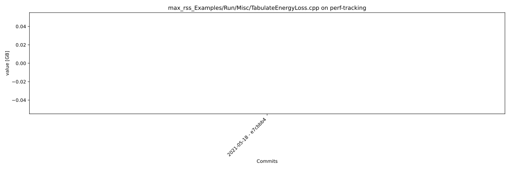

| 1 |
3a8bfa1 |
2021-05-12 13:07:09+02:00 |
0.000000 |
| 2 |
df7b197 |
2021-05-11 15:54:50+02:00 |
0.000000 |
| 3 |
52f85da |
2021-05-11 14:43:59+02:00 |
0.000000 |
| 4 |
066b5e5 |
2021-05-10 19:13:37+02:00 |
0.000000 |
| 5 |
9b864e8 |
2021-05-10 12:56:28+02:00 |
0.000000 |
| 6 |
6cd6cee |
2021-05-07 14:54:54+02:00 |
0.000000 |
| 7 |
f632f7b |
2021-05-06 14:42:48+02:00 |
0.000000 |
| 8 |
c13bbd2 |
2021-05-06 10:17:06+02:00 |
0.000000 |
| 9 |
c3c64c3 |
2021-05-05 09:29:44+02:00 |
0.000000 |
| 10 |
db1ce93 |
2021-05-05 09:04:31+02:00 |
0.000000 |
| 11 |
8ce0f88 |
2021-05-04 17:38:31+02:00 |
0.000000 |
| 12 |
45e5289 |
2021-05-04 10:49:06+02:00 |
0.000000 |
| 13 |
466691d |
2021-04-29 13:53:00+02:00 |
0.000000 |
| 14 |
ffd0c8a |
2021-04-28 19:26:52+02:00 |
0.000000 |
| 15 |
ec14282 |
2021-04-28 11:24:08+02:00 |
0.000000 |
| 16 |
87bb6e0 |
2021-04-27 15:12:50+02:00 |
0.000000 |
| 17 |
707e9e6 |
2021-04-27 09:35:18+02:00 |
0.000000 |
| 18 |
992f087 |
2021-04-23 09:04:30+02:00 |
0.000000 |
| 19 |
4c3d6ac |
2021-04-21 15:32:19+02:00 |
0.000000 |
| 20 |
7e045b6 |
2021-04-20 17:16:48+02:00 |
0.000000 |
| 21 |
0e4335a |
2021-04-19 15:29:58+02:00 |
0.000000 |
| 22 |
5ea8df7 |
2021-04-19 09:04:02+02:00 |
0.000000 |
| 23 |
e040867 |
2021-04-15 09:04:31+02:00 |
0.000000 |
| 24 |
8f7c6c5 |
2021-04-09 20:48:13+02:00 |
0.000000 |
| 25 |
ed25abc |
2021-04-08 09:06:52+02:00 |
0.000000 |
| 26 |
d424ca1 |
2021-04-07 13:05:01+02:00 |
0.000000 |
| 27 |
faf93e6 |
2021-04-07 09:29:08+02:00 |
0.000000 |
| 28 |
83e3d93 |
2021-04-07 09:08:29+02:00 |
0.000000 |
| 29 |
5038ab6 |
2021-03-31 13:00:45+02:00 |
0.000000 |
| 30 |
464c247 |
2021-03-31 11:10:12+02:00 |
0.000000 |
| 31 |
4efbca9 |
2021-03-30 15:40:27+02:00 |
0.000000 |
| 32 |
34e75e6 |
2021-03-23 17:35:47+01:00 |
0.000000 |
| 33 |
f8c504e |
2021-03-19 11:13:33+01:00 |
0.000000 |
| 34 |
c0537ba |
2021-03-17 17:56:42+01:00 |
0.000000 |
| 35 |
97405c2 |
2021-03-17 14:47:33+01:00 |
0.000000 |
| 36 |
08335b0 |
2021-03-17 09:27:07+01:00 |
0.000000 |
| 37 |
5a8802d |
2021-03-16 10:02:31+01:00 |
0.000000 |
| 38 |
e705d2f |
2021-03-14 18:01:09+01:00 |
0.000000 |
| 39 |
4b3509d |
2021-03-09 19:31:12+01:00 |
0.000000 |
| 40 |
a9ec279 |
2021-03-09 17:04:02+01:00 |
0.000000 |
| 41 |
7c77035 |
2021-03-08 14:49:05+01:00 |
0.000000 |
| 42 |
337507b |
2021-03-08 11:36:27+01:00 |
0.000000 |
| 43 |
31562d0 |
2021-03-04 16:56:03+01:00 |
0.000000 |
| 44 |
2a68ac4 |
2021-03-04 09:53:13+01:00 |
0.000000 |
| 45 |
ea4e91c |
2021-03-04 09:52:13+01:00 |
0.000000 |
| 46 |
506d1d8 |
2021-03-03 16:22:19+01:00 |
0.000000 |
| 47 |
1d79bed |
2021-03-03 16:11:25+01:00 |
0.000000 |
| 48 |
26369ab |
2021-03-03 14:57:16+01:00 |
0.000000 |
| 49 |
397e0c9 |
2021-03-03 08:57:23+01:00 |
0.000000 |
| 50 |
9dd6e12 |
2021-03-02 17:53:55+01:00 |
0.000000 |
| 51 |
f264087 |
2021-03-02 17:51:12+01:00 |
0.000000 |
| 52 |
ba29171 |
2021-03-02 15:43:04+01:00 |
0.000000 |
| 53 |
12f1247 |
2021-03-02 10:37:04+01:00 |
0.000000 |
| 54 |
213d97d |
2021-03-01 09:17:32+01:00 |
0.000000 |
| 55 |
dcea072 |
2021-02-27 10:31:01+01:00 |
0.000000 |
| 56 |
ac778d2 |
2021-02-25 20:40:41+01:00 |
0.000000 |
| 57 |
b48d30c |
2021-02-25 12:07:07+01:00 |
0.000000 |
| 58 |
46309cd |
2021-02-24 11:24:38+01:00 |
0.000000 |
| 59 |
3b345dd |
2021-02-24 08:53:00+01:00 |
0.000000 |
| 60 |
48a159e |
2021-02-23 17:22:54+01:00 |
0.000000 |
| 61 |
4a60176 |
2021-02-22 14:58:45+01:00 |
0.000000 |
| 62 |
3317a35 |
2021-02-19 09:17:01+01:00 |
0.000000 |
| 63 |
ec9e0c7 |
2021-02-18 14:32:45+01:00 |
0.000000 |
| 64 |
e0fe015 |
2021-02-18 09:03:39+01:00 |
0.000000 |
| 65 |
0bf8474 |
2021-02-17 16:55:16+01:00 |
0.000000 |
| 66 |
f680697 |
2021-02-16 17:14:43+01:00 |
0.000000 |
| 67 |
f5641b2 |
2021-02-15 09:01:54+01:00 |
0.000000 |
| 68 |
ae1889d |
2021-02-11 14:18:25+01:00 |
0.000000 |
| 69 |
086e721 |
2021-02-11 10:27:35+01:00 |
0.000000 |
| 70 |
bd9115d |
2021-02-10 10:44:03+01:00 |
0.000000 |
| 71 |
1e69ac6 |
2021-02-10 09:08:04+01:00 |
0.000000 |
| 72 |
b1fc4e7 |
2021-02-09 17:06:21+01:00 |
0.000000 |
| 73 |
1ec8987 |
2021-02-09 11:48:23+01:00 |
0.157646 |
| 74 |
478a565 |
2021-02-09 07:48:02+01:00 |
0.000000 |
| 75 |
5c6bbbb |
2021-02-08 17:39:27+01:00 |
0.000000 |
| 76 |
040a098 |
2021-02-08 14:39:42+01:00 |
0.000000 |
| 77 |
e5d9be3 |
2021-02-08 11:46:58+01:00 |
0.000000 |
| 78 |
b0987df |
2021-02-05 13:58:25+01:00 |
0.141792 |
| 79 |
4d7f1d7 |
2021-02-05 09:02:59+01:00 |
0.000000 |
| 80 |
0b9b17a |
2021-02-04 12:26:55+01:00 |
0.000000 |
| 81 |
132f208 |
2021-02-03 18:01:42+01:00 |
0.000000 |
| 82 |
4a9e6a0 |
2021-02-03 16:09:15+01:00 |
0.000000 |
| 83 |
fa69ac0 |
2021-02-03 15:28:46+01:00 |
0.000000 |
| 84 |
6ab9d48 |
2021-02-03 15:12:50+01:00 |
0.000000 |
| 85 |
6b962f5 |
2021-02-03 11:39:58+01:00 |
0.000000 |
| 86 |
bb07ac1 |
2021-02-02 21:07:21+01:00 |
0.111301 |
| 87 |
f61a219 |
2021-02-02 13:33:26+01:00 |
0.000000 |
| 88 |
32801fe |
2021-02-01 14:07:50+01:00 |
0.000000 |
| 89 |
c97d2af |
2021-01-29 16:12:42+01:00 |
0.000000 |
| 90 |
9efc8fc |
2021-01-29 14:37:45+01:00 |
0.000000 |
| 91 |
91c52d2 |
2021-01-29 11:46:39+01:00 |
0.000000 |
| 92 |
b7e70f3 |
2021-01-29 09:04:19+01:00 |
0.000000 |
| 93 |
4662b05 |
2021-01-29 07:58:58+00:00 |
0.000000 |
| 94 |
8514b0c |
2021-01-28 16:34:24+01:00 |
0.000000 |
| 95 |
41c61f4 |
2021-01-27 11:17:55+01:00 |
0.000000 |
| 96 |
0b4bc71 |
2021-01-26 16:50:14+01:00 |
0.000000 |
| 97 |
4bd3a88 |
2021-01-22 18:58:58+01:00 |
0.000000 |
| 98 |
3ddff2e |
2021-01-22 16:28:10+00:00 |
0.000000 |
| 99 |
1755a19 |
2021-01-22 10:21:31+01:00 |
0.000000 |
| 100 |
cae92cb |
2021-01-21 08:50:47+00:00 |
0.000000 |
| 101 |
f3f5479 |
2021-01-20 17:15:56+01:00 |
0.000000 |
 
